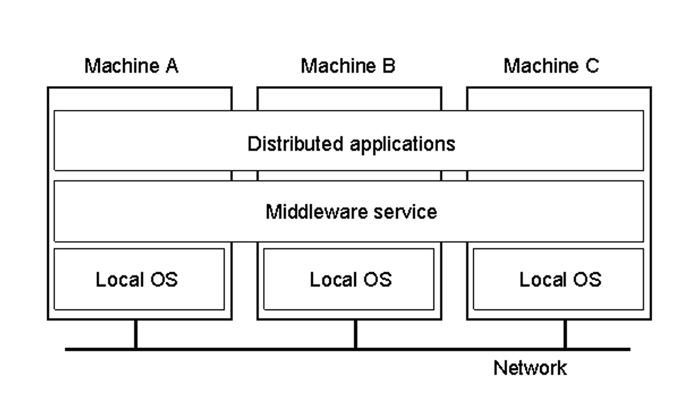
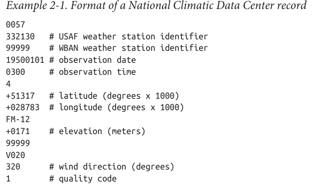
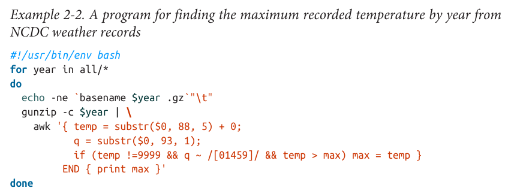
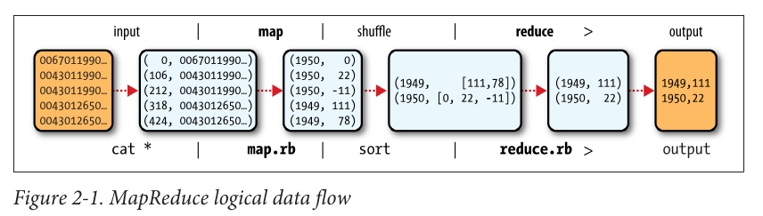

## ITEC 4220 - Advanced Data Analytics ### Module 6 - Big Data algorithms and tools: MapReduce #### Cengiz Gunay, Rick Price, Fall 2020 #### Reading: Ch 2 Hadoop - The definitive guide
### Distributed System - What is a distributed system?
### Distributed System - A collection of <u>independent</u> computers that appear to the user as a single <u>coherent</u> system.
### Characteristics of a Distributed System - Hides heterogeneity and internal workings - Easy to expand and scale - Continuous availability - Examples: - Networked workstations - Distributed databases - WWW - Peer to peer systems

### Design Goals - Make resources available to customers - Enable resource sharing - Transparancy - Hide distributed nature - Security and privacy - Scalabilty
## Transparency in a Distributed System <table style="width:100%"> <tr> <th>Transparency</th> <th>Description</th> </tr> <tr> <td>Access</td> <td>Differences in representation and how it is accessed</td> </tr> <tr> <td>Location</td> <td>Where a respource is located</td> </tr> <tr> <td>Migration</td> <td>Resource may be moved to another location</td> </tr> <tr> <td>Relocation</td> <td>Resource may be moved to another location while in use</td> </tr> <tr> <td>Replication</td> <td>Resource may have multiple copies</td> </tr> <tr> <td>Concurrency</td> <td>Resource may be shared by multiple users</td> </tr> <tr> <td>Failure</td> <td>Failure and recovery of a resource</td> </tr> <tr> <td>Persistence</td> <td>Resource is in memory or on disk </td> </tr> </table>
### Security and Privacy - Security - Access control - Data integrity - Data/service availability - Copyright protection - Privacy - Exposing information allowing users to guess secure information
## Scalability Problems <table style="width:100%"> <tr> <th>Concept</th> <th>Example</th> </tr> <tr> <td>Centralized services</td> <td>Single server for all users</td> </tr> <tr> <td>Centralized data</td> <td>A single on-line telephone book</td> </tr> <tr> <td>Centralized algorithms</td> <td>Doing routing based on complete information</td> </tr> </table>
### Characteristics of Distributed Algorithms - Single machine does not have complete information - Decisions are made based on local information - Failure of a node does not cause the algorithm to fail - No global clock - Distributed algorithms are much harder than centralized algorithms
### Invalid assumptions - Network is reliable - Network is secure - Network is homogenous - Topology does not changes - Latency is zero - Bandwidth is infinite - Transport cost is zero - Single administrator
### Hadoop Distributed File System - Based on The Hadoop Distributed File System by - Konstantin Shvachko - Hairong Kuang - Sanjay Radia - Robert Chansler
### HDFS - Design - Store very large data sets reliably - Stream at high bandwidth to applications - Store file metadata and application data separately - Improves reliablity - Improves performance in lookups - Leverages "geographical" proximity for performance
### Hadoop Facts - Based on Google MapReduce - High bandwidth/distributed storage - Yahoo cluster: 25,000 servers, 25 petabytes - Apache product - Yahoo developed 80% of the core
### Design Architecture - Name Node - Data Nodes - HDFS Client - Image and Journal - Checkpoint Node - Backup Node - File System Snapshots
### Name Node - Single Name Node per cluster - Utilizes inodes - Directories and Files - Attributes - Splits files and directories into large blocks - Typically 128 megabytes - Maps data to multiple data nodes - Name space is kept in RAM - inode data - list of blocks belonging to each file
### Data Node - Contains the file data - Represented by two files on native system - Data - Metadata - Size - Actual data size rather than fixed block size - Startup - Handshage with Name Node - Block report - Block ID, Time stamp, Length of each block - Sent on connection - Heartbeat - Snapshot
### HDFS Read - Contact Name Node - Name Node send to client info for nearest Data Node - Client contacts the data node and gets the data
### HDFS Write <img src="images/HDFS Write.png" style="max-width: auto; height: 500px; margin: 1em;"/>
### HDFS Failure - Name Node - Cluster is unavailable - Restart Name Node - Backup can transition to Name Node - Data Node - Minimum of three copies
### The Hadoop Distributed Filesystem (HDFS) Hadoop works on files in the HDFS that is different than your folders on Ursus. ```bash # List files on HDFS bin/hdfs dfs -ls # Create your user folder inside HDFS bin/hdfs dfs -mkdir /user bin/hdfs dfs -mkdir /user/analytics # Copy files to your HDFS folder bin/hdfs dfs -copyFromLocal file01.txt input ```
### Practice - Log onto your VM - Turner - 172.20.0.144 - Sarah - 172.20.0.145 - Daniel - 172.20.0.146 - Ruth - 172.20.0.147
### Start HDFS - cd /home/hadoop - sbin/start-dfs.sh - Open a web browser when start completes - Connect to your machine, port 50070 - 172.20.0.144:50070 - Hadoop console
### Create directories on HDFS - bin/hdfs dfs -mkdir /user - bin/hdfs dfs -mkdir /user/analytics - We need to upload data for processing - bin/hdfs dfs -put etc/hadoop input - Copies the contents of the etc/hadoop directory to the HDFS in a directory input - bin/hadoop jar share/hadoop/mapreduce/hadoop-mapreduce-examples-2.8.1.jar grep input output 'dfs[a-z.]+' - Executes hadoop sample file using grep on the input directory and stores it in the output directory
### Examine results - bin/hdfs dfs -ls output - Shows the content of the output subdirectory - bin/hdfs dfs -copyToLocal output/part-r-00000 output.txt
### Results ```bash 6 dfs.audit.logger 4 dfs.class 3 dfs.logger 3 dfs.server.namenode. 2 dfs.audit.log.maxbackupindex 2 dfs.period 2 dfs.audit.log.maxfilesize 1 dfs.replication 1 dfs.log 1 dfs.file 1 dfs.data.dir 1 dfs.servers 1 dfsadmin 1 dfsmetrics.log 1 dfs.name.dir ```
### Hadoop - Run your job again - Remove output directory - bin/hdfs dfs -rm -R output - Remove local file - Shut down HDFS - sbin/stop-dfs.sh - Two ways to upload your file - put the directory like we did above - Create the directory and use bin/hdfs dfs -copyFromLocal fileName destination
### Data! - Prediction: the world will have 44 _zettabytes_ by year 2020 - Scale: mega, giga, tera, peta, exa, zetta (`$10^{21}$`) - 1.7 megabytes will be created by every person per second - By 2025 463 exabytes generated every day Data producers: - NY Stock Exchange: 4-5 terabytes/day - Facebook: 7 petabytes/month - Ancestry.com: 10 petabytes - Internet Archive: 18.5 petabytes - Google, Facebook, Microsoft, Amazon - 1,200 petabytes of data Numbers from textbook, circa 2013-2014. Updates from multiple web sites
### Data Growth <img src="images/Data Growth.png" style="max-width: auto; height: 600px; margin: 1em;"/>
### The need for parallel and distributed processing - Large data requires more than one machine - Parallelization is painful - Load balancing is a problem, otherwise you wait for the slowest one - **MapReduce** algorithm implementation in **Hadoop** provides a solution - Has been widely adopted in industry - Hadoop comes with an ecosystem of tools: YARN, HDFS, Pig, Spark
### MapReduce compared to traditional RDBMS ||Traditional RDBMS|MapReduce |-|-|- |Data size|Gigabytes|Petabytes |Access|Interactive and Batch|Batch only |Updates|Read and write many times|Write once, read many times |Transactions|ACID|None |Structure|Schema-on-write|Schema-on-read |Scaling|Nonlinear|Linear - **RDBMS**: Relational database management system - **ACID**: Atomicity, Consistency, Isolation, Durability
### What is MapReduce? An example A weather dataset from White Chapter 2 - Data from weather stations all around world - Each row is one reading from one station at a time 
### Back to the command-line: inspect the data ```bash % ls raw/1990 | head 010010-99999-1990.gz 010014-99999-1990.gz 010015-99999-1990.gz 010016-99999-1990.gz 010017-99999-1990.gz 010030-99999-1990.gz 010040-99999-1990.gz 010080-99999-1990.gz 010100-99999-1990.gz 010150-99999-1990.gz ``` <!-- .element: style="width: 25ex; margin: 10px; float: left;" -->  - Many small files; can be analyzed sequentially with <!-- .element: class="fragment" data-fragment-index="2" --> `awk`: ```bash % ./max_temperature.sh 1901 317 1902 244 1903 289 1904 256 1905 283 ... ``` <!-- .element: style="width: 25ex; margin-left: auto;" class="fragment" data-fragment-index="2" -->
### Enter Map+Reduce: Can be partitioned to run on parallel hardware 
### Map in Java: (ID, row of text) `$\Rightarrow$` (year, temp) ```java public class MaxTemperatureMapper extends MapReduceBase implements Mapper<LongWritable, Text, Text, IntWritable> { @Override public void map(LongWritable key, Text value, OutputCollector<Text, IntWritable> output, Reporter reporter) throws IOException { String line = value.toString(); String[] data = line.split(","); String monthDay = line.substring(10, 15); int airTemperature; String temp = ""; temp = data[2].trim(); airTemperature = (int) Double.parseDouble(temp); output.collect(new Text(monthDay), new IntWritable(airTemperature)); } } ``` <!-- .element: -->
### Reduce: (year, [temps]) `$\Rightarrow$` (year, max temp) ```java public class MaxTemperatureReducer extends MapReduceBase implements Reducer<Text, IntWritable, Text, IntWritable> { @Override public void reduce(Text key, Iterator<IntWritable> values, OutputCollector<Text, IntWritable> output, Reporter reporter) throws IOException { System.out.println("In the reduce"); int maxValue = Integer.MIN_VALUE; while (values.hasNext()) { IntWritable value = (IntWritable) values.next(); System.out.println("Value for " + key + " is " + value.get()); maxValue = Math.max(maxValue, value.get()); } output.collect(key, new IntWritable(maxValue)); } } ```
### The Driver Program ```java public class TemperatureDriver { public static void main(String[] args) throws Exception { JobClient myClient = new JobClient(); JobConf jobConf = new JobConf(TemperatureDriver.class); //Create a configuration object for the job jobConf.setJobName("MaxTemp"); //Set a name of the Job jobConf.setOutputKeyClass(Text.class); //Specify data type of output key and value jobConf.setOutputValueClass(IntWritable.class); jobConf.setMapperClass(MaxTemperatureMapper.class); //Specify names of Mapper and Reducer class jobConf.setReducerClass(MaxTemperatureReducer.class); jobConf.setInputFormat(TextInputFormat.class); //Specify formats of the data type of Input and output jobConf.setOutputFormat(TextOutputFormat.class); FileInputFormat.setInputPaths(jobConf, new Path(args[0])); //arg[0] = input directory, arg[1] = output directory FileOutputFormat.setOutputPath(jobConf, new Path(args[1])); myClient.setConf(jobConf); try { JobClient.runJob(jobConf); //run the job } catch (Exception e) { e.printStackTrace(); } } } ```
### Compile Using IntelliJ - Under Project Structure, libraries - include the Hadoop Jar - Ensure you are targeting Java 8 on Project and Modules. Can use a later JDK but must target 8. - Manifest.txt - Must identify your Main-Class. This will be your driver - Must have a blank line after your Main-Class: line - Right click on the out directory - Open in Terminal - In the terminal window - jar cfm MaxTemp.jar Manifest.txt *.class
### Copy to your VM - Under Tools, Deployment, Configuration - + SFTP - Name your connection, I named mine Hadoop - + IP - Password - Set Root path /home/hadoop - Click OK - Tools/Deployment/Browse Remote Host - In your out directory in IntelliJ - Select your jar file - Drag it to your remote host - Can do the same with Daily.txt
### Go to your VM from your terminal/git bash window - Start your HDFS - sbin/start-dfs.sh - Create a directory on the HDFS - bin/hdfs dfs -mkdir inputTemp - Copy your file (Daily.txt) to inputTemp - bin/hdfs dfs -copyFromLocal Daily.txt inputTemp - Run the job - bin/hadoop jar MaxTemp.jar inputTemp outputTemp - Look for the results - bin/hdfs dfs -ls outputTemp - Copy it to the VM file system - bin/hdfs dfs -copyToLocal outputTemp/part-r-00000 max.txt - assumes your Hadoop output is in the part-r-00000 file
### A sample run ```bash bin/hadoop jar MaxTemp.jar inputTemp outputTemp 20/10/04 17:59:43 INFO Configuration.deprecation: session.id is deprecated. Instead, use dfs.metrics.session-id 20/10/04 17:59:43 INFO jvm.JvmMetrics: Initializing JVM Metrics with processName=JobTracker, sessionId= 20/10/04 17:59:43 INFO jvm.JvmMetrics: Cannot initialize JVM Metrics with processName=JobTracker, sessionId= - already initialized 20/10/04 17:59:43 WARN mapreduce.JobResourceUploader: Hadoop command-line option parsing not performed. Implement the Tool interface and execute your application with ToolRunner to remedy this. 20/10/04 17:59:43 INFO mapred.FileInputFormat: Total input files to process : 1 20/10/04 17:59:43 INFO mapreduce.JobSubmitter: number of splits:1 20/10/04 17:59:43 INFO mapreduce.JobSubmitter: Submitting tokens for job: job_local1258641120_0001 20/10/04 17:59:44 INFO mapreduce.Job: The url to track the job: http://localhost:8080/ 20/10/04 17:59:44 INFO mapreduce.Job: Running job: job_local1258641120_0001 20/10/04 17:59:44 INFO mapred.LocalJobRunner: OutputCommitter set in config null 20/10/04 17:59:44 INFO mapred.LocalJobRunner: OutputCommitter is org.apache.hadoop.mapred.FileOutputCommitter 20/10/04 17:59:44 INFO output.FileOutputCommitter: File Output Committer Algorithm version is 1 20/10/04 17:59:44 INFO output.FileOutputCommitter: FileOutputCommitter skip cleanup _temporary folders under output directory:false, ignore cleanup failures: false 20/10/04 17:59:44 INFO mapred.LocalJobRunner: Waiting for map tasks 20/10/04 17:59:44 INFO mapred.LocalJobRunner: Starting task: attempt_local1258641120_0001_m_000000_0 20/10/04 17:59:44 INFO output.FileOutputCommitter: File Output Committer Algorithm version is 1 20/10/04 17:59:44 INFO output.FileOutputCommitter: FileOutputCommitter skip cleanup _temporary folders under output directory:false, ignore cleanup failures: false 20/10/04 17:59:44 INFO mapred.Task: Using ResourceCalculatorProcessTree : [ ] 20/10/04 17:59:44 INFO mapred.MapTask: Processing split: hdfs://localhost:9000/user/projects/inputTemp/Daily.txt:0+96657 20/10/04 17:59:44 INFO mapred.MapTask: numReduceTasks: 1 20/10/04 17:59:44 INFO mapred.MapTask: (EQUATOR) 0 kvi 26214396(104857584) 20/10/04 17:59:44 INFO mapred.MapTask: mapreduce.task.io.sort.mb: 100 20/10/04 17:59:44 INFO mapred.MapTask: soft limit at 83886080 20/10/04 17:59:44 INFO mapred.MapTask: bufstart = 0; bufvoid = 104857600 20/10/04 17:59:44 INFO mapred.MapTask: kvstart = 26214396; length = 6553600 20/10/04 17:59:44 INFO mapred.MapTask: Map output collector class = org.apache.hadoop.mapred.MapTask$MapOutputBuffer 20/10/04 17:59:44 INFO mapred.LocalJobRunner: 20/10/04 17:59:44 INFO mapred.MapTask: Starting flush of map output 20/10/04 17:59:44 INFO mapred.MapTask: Spilling map output 20/10/04 17:59:44 INFO mapred.MapTask: bufstart = 0; bufend = 3190; bufvoid = 104857600 20/10/04 17:59:44 INFO mapred.MapTask: kvstart = 26214396(104857584); kvend = 26213124(104852496); length = 1273/6553600 20/10/04 17:59:44 INFO mapred.MapTask: Finished spill 0 20/10/04 17:59:44 INFO mapred.Task: Task:attempt_local1258641120_0001_m_000000_0 is done. And is in the process of committing 20/10/04 17:59:44 INFO mapred.LocalJobRunner: hdfs://localhost:9000/user/projects/inputTemp/Daily.txt:0+96657 20/10/04 17:59:44 INFO mapred.Task: Task 'attempt_local1258641120_0001_m_000000_0' done. 20/10/04 17:59:44 INFO mapred.LocalJobRunner: Finishing task: attempt_local1258641120_0001_m_000000_0 20/10/04 17:59:44 INFO mapred.LocalJobRunner: map task executor complete. 20/10/04 17:59:44 INFO mapred.LocalJobRunner: Waiting for reduce tasks 20/10/04 17:59:44 INFO mapred.LocalJobRunner: Starting task: attempt_local1258641120_0001_r_000000_0 20/10/04 17:59:44 INFO output.FileOutputCommitter: File Output Committer Algorithm version is 1 20/10/04 17:59:44 INFO output.FileOutputCommitter: FileOutputCommitter skip cleanup _temporary folders under output directory:false, ignore cleanup failures: false 20/10/04 17:59:44 INFO mapred.Task: Using ResourceCalculatorProcessTree : [ ] 20/10/04 17:59:44 INFO mapred.ReduceTask: Using ShuffleConsumerPlugin: org.apache.hadoop.mapreduce.task.reduce.Shuffle@5dcbd403 20/10/04 17:59:44 INFO reduce.MergeManagerImpl: MergerManager: memoryLimit=363285696, maxSingleShuffleLimit=90821424, mergeThreshold=239768576, ioSortFactor=10, memToMemMergeOutputsThreshold=10 20/10/04 17:59:44 INFO reduce.EventFetcher: attempt_local1258641120_0001_r_000000_0 Thread started: EventFetcher for fetching Map Completion Events 20/10/04 17:59:44 INFO reduce.LocalFetcher: localfetcher#1 about to shuffle output of map attempt_local1258641120_0001_m_000000_0 decomp: 3830 len: 3834 to MEMORY 20/10/04 17:59:44 INFO reduce.InMemoryMapOutput: Read 3830 bytes from map-output for attempt_local1258641120_0001_m_000000_0 20/10/04 17:59:44 INFO reduce.MergeManagerImpl: closeInMemoryFile -> map-output of size: 3830, inMemoryMapOutputs.size() -> 1, commitMemory -> 0, usedMemory ->3830 20/10/04 17:59:44 INFO reduce.EventFetcher: EventFetcher is interrupted.. Returning 20/10/04 17:59:44 INFO mapred.LocalJobRunner: 1 / 1 copied. 20/10/04 17:59:44 INFO reduce.MergeManagerImpl: finalMerge called with 1 in-memory map-outputs and 0 on-disk map-outputs 20/10/04 17:59:44 WARN io.ReadaheadPool: Failed readahead on ifile EBADF: Bad file descriptor at org.apache.hadoop.io.nativeio.NativeIO$POSIX.posix_fadvise(Native Method) at org.apache.hadoop.io.nativeio.NativeIO$POSIX.posixFadviseIfPossible(NativeIO.java:267) at org.apache.hadoop.io.nativeio.NativeIO$POSIX$CacheManipulator.posixFadviseIfPossible(NativeIO.java:146) at org.apache.hadoop.io.ReadaheadPool$ReadaheadRequestImpl.run(ReadaheadPool.java:208) at java.util.concurrent.ThreadPoolExecutor.runWorker(ThreadPoolExecutor.java:1149) at java.util.concurrent.ThreadPoolExecutor$Worker.run(ThreadPoolExecutor.java:624) at java.lang.Thread.run(Thread.java:748) 20/10/04 17:59:44 INFO mapred.Merger: Merging 1 sorted segments 20/10/04 17:59:44 INFO mapred.Merger: Down to the last merge-pass, with 1 segments left of total size: 3822 bytes 20/10/04 17:59:44 INFO reduce.MergeManagerImpl: Merged 1 segments, 3830 bytes to disk to satisfy reduce memory limit 20/10/04 17:59:44 INFO reduce.MergeManagerImpl: Merging 1 files, 3834 bytes from disk 20/10/04 17:59:44 INFO reduce.MergeManagerImpl: Merging 0 segments, 0 bytes from memory into reduce 20/10/04 17:59:44 INFO mapred.Merger: Merging 1 sorted segments 20/10/04 17:59:44 INFO mapred.Merger: Down to the last merge-pass, with 1 segments left of total size: 3822 bytes 20/10/04 17:59:44 INFO mapred.LocalJobRunner: 1 / 1 copied. In the reduce Value for 0727, is 0 In the reduce Value for 0728, is 89 Value for 0728, is 82 Value for 0728, is 92 In the reduce Value for 0729, is 82 Value for 0729, is 88 Value for 0729, is 90 Value for 0729, is 88 In the reduce Value for 0730, is 86 Value for 0730, is 89 Value for 0730, is 88 Value for 0730, is 91 In the reduce Value for 0731, is 75 Value for 0731, is 80 Value for 0731, is 83 Value for 0731, is 73 Value for 0731, is 78 Value for 0731, is 77 Value for 0731, is 75 Value for 0731, is 81 Value for 0731, is 78 Value for 0731, is 81 Value for 0731, is 78 Value for 0731, is 77 Value for 0731, is 79 Value for 0731, is 76 Value for 0731, is 75 Value for 0731, is 81 Value for 0731, is 80 Value for 0731, is 82 Value for 0731, is 79 Value for 0731, is 79 Value for 0731, is 75 Value for 0731, is 78 Value for 0731, is 76 Value for 0731, is 81 Value for 0731, is 79 Value for 0731, is 77 Value for 0731, is 74 Value for 0731, is 77 Value for 0731, is 75 Value for 0731, is 75 Value for 0731, is 74 Value for 0731, is 72 Value for 0731, is 68 Value for 0731, is 89 Value for 0731, is 81 Value for 0731, is 81 Value for 0731, is 84 Value for 0731, is 84 Value for 0731, is 89 Value for 0731, is 89 Value for 0731, is 90 Value for 0731, is 88 Value for 0731, is 92 Value for 0731, is 0 Value for 0731, is 90 Value for 0731, is 92 Value for 0731, is 90 Value for 0731, is 83 Value for 0731, is 84 Value for 0731, is 82 Value for 0731, is 82 Value for 0731, is 85 Value for 0731, is 81 Value for 0731, is 81 Value for 0731, is 85 Value for 0731, is 92 Value for 0731, is 86 Value for 0731, is 85 Value for 0731, is 0 Value for 0731, is 82 Value for 0731, is 81 Value for 0731, is 83 Value for 0731, is 83 Value for 0731, is 101 Value for 0731, is 98 Value for 0731, is 50 Value for 0731, is 73 Value for 0731, is 96 Value for 0731, is 90 Value for 0731, is 90 Value for 0731, is 82 Value for 0731, is 91 Value for 0731, is 85 Value for 0731, is 87 Value for 0731, is 90 Value for 0731, is 75 Value for 0731, is 77 Value for 0731, is 76 Value for 0731, is 75 Value for 0731, is 78 Value for 0731, is 79 Value for 0731, is 78 Value for 0731, is 78 Value for 0731, is 77 Value for 0731, is 76 Value for 0731, is 90 Value for 0731, is 50 Value for 0731, is 90 Value for 0731, is 0 Value for 0731, is 82 Value for 0731, is 81 Value for 0731, is 82 Value for 0731, is 87 Value for 0731, is 88 Value for 0731, is 56 Value for 0731, is 101 Value for 0731, is 67 Value for 0731, is 90 Value for 0731, is 69 Value for 0731, is 78 Value for 0731, is 85 Value for 0731, is 84 Value for 0731, is 79 Value for 0731, is 86 Value for 0731, is 99 Value for 0731, is 85 Value for 0731, is 89 Value for 0731, is 91 Value for 0731, is 69 Value for 0731, is 91 Value for 0731, is 82 Value for 0731, is 85 Value for 0731, is 84 Value for 0731, is 86 Value for 0731, is 93 Value for 0731, is 95 Value for 0731, is 86 Value for 0731, is 88 Value for 0731, is 88 Value for 0731, is 86 Value for 0731, is 87 Value for 0731, is 86 Value for 0731, is 85 Value for 0731, is 85 Value for 0731, is 83 Value for 0731, is 81 Value for 0731, is 84 Value for 0731, is 80 Value for 0731, is 50 Value for 0731, is 80 Value for 0731, is 96 Value for 0731, is 87 Value for 0731, is 93 Value for 0731, is 106 Value for 0731, is 105 Value for 0731, is 100 Value for 0731, is 99 Value for 0731, is 99 Value for 0731, is 90 Value for 0731, is 96 Value for 0731, is 91 Value for 0731, is 95 Value for 0731, is 86 Value for 0731, is 82 Value for 0731, is 86 Value for 0731, is 91 Value for 0731, is 89 Value for 0731, is 94 Value for 0731, is 0 Value for 0731, is 97 Value for 0731, is 96 Value for 0731, is 82 Value for 0731, is 89 Value for 0731, is 87 Value for 0731, is 100 Value for 0731, is 81 Value for 0731, is 78 Value for 0731, is 81 Value for 0731, is 81 Value for 0731, is 81 Value for 0731, is 84 Value for 0731, is 82 Value for 0731, is 81 Value for 0731, is 79 Value for 0731, is 80 Value for 0731, is 79 Value for 0731, is 76 Value for 0731, is 83 Value for 0731, is 80 Value for 0731, is 80 Value for 0731, is 71 Value for 0731, is 77 Value for 0731, is 76 Value for 0731, is 78 Value for 0731, is 79 Value for 0731, is 76 Value for 0731, is 77 Value for 0731, is 79 Value for 0731, is 82 Value for 0731, is 75 Value for 0731, is 77 Value for 0731, is 77 Value for 0731, is 79 Value for 0731, is 81 Value for 0731, is 79 Value for 0731, is 83 Value for 0731, is 78 Value for 0731, is 83 Value for 0731, is 75 Value for 0731, is 79 Value for 0731, is 78 Value for 0731, is 78 Value for 0731, is 78 Value for 0731, is 79 Value for 0731, is 74 Value for 0731, is 79 Value for 0731, is 77 Value for 0731, is 80 Value for 0731, is 79 Value for 0731, is 80 Value for 0731, is 79 Value for 0731, is 81 Value for 0731, is 77 Value for 0731, is 81 Value for 0731, is 73 Value for 0731, is 86 Value for 0731, is 84 Value for 0731, is 84 Value for 0731, is 88 Value for 0731, is 90 Value for 0731, is 90 Value for 0731, is 87 Value for 0731, is 86 Value for 0731, is 91 Value for 0731, is 91 Value for 0731, is 92 Value for 0731, is 98 Value for 0731, is 88 Value for 0731, is 95 Value for 0731, is 97 Value for 0731, is 98 Value for 0731, is 91 Value for 0731, is 91 Value for 0731, is 91 Value for 0731, is 86 Value for 0731, is 90 Value for 0731, is 90 Value for 0731, is 85 Value for 0731, is 91 Value for 0731, is 91 Value for 0731, is 88 Value for 0731, is 90 Value for 0731, is 81 Value for 0731, is 91 Value for 0731, is 89 Value for 0731, is 81 Value for 0731, is 91 Value for 0731, is 90 Value for 0731, is 82 Value for 0731, is 83 Value for 0731, is 84 Value for 0731, is 85 Value for 0731, is 86 Value for 0731, is 85 Value for 0731, is 88 Value for 0731, is 84 Value for 0731, is 85 Value for 0731, is 82 Value for 0731, is 84 Value for 0731, is 77 Value for 0731, is 86 Value for 0731, is 88 Value for 0731, is 0 Value for 0731, is 50 Value for 0731, is 92 Value for 0731, is 99 Value for 0731, is 98 Value for 0731, is 94 Value for 0731, is 90 Value for 0731, is 50 Value for 0731, is 97 Value for 0731, is 94 Value for 0731, is 95 Value for 0731, is 98 Value for 0731, is 95 Value for 0731, is 92 Value for 0731, is 90 Value for 0731, is 95 Value for 0731, is 92 Value for 0731, is 92 Value for 0731, is 0 Value for 0731, is 90 Value for 0731, is 90 Value for 0731, is 90 Value for 0731, is 89 Value for 0731, is 89 Value for 0731, is 90 Value for 0731, is 92 Value for 0731, is 86 Value for 0731, is 76 Value for 0731, is 79 Value for 0731, is 71 Value for 0731, is 77 Value for 0731, is 74 Value for 0731, is 88 Value for 0731, is 85 Value for 0731, is 91 Value for 0731, is 83 Value for 0731, is 97 Value for 0731, is 89 Value for 0731, is 83 Value for 0731, is 84 Value for 0731, is 84 Value for 0731, is 91 Value for 0731, is 91 Value for 0731, is 95 Value for 0731, is 90 Value for 0731, is 81 Value for 0731, is 76 Value for 0731, is 88 Value for 0731, is 92 Value for 0731, is 90 Value for 0731, is 102 Value for 0731, is 82 In the reduce Value for 0801, is 85 Value for 0801, is 87 Value for 0801, is 108 20/10/04 17:59:44 INFO mapred.Task: Task:attempt_local1258641120_0001_r_000000_0 is done. And is in the process of committing 20/10/04 17:59:44 INFO mapred.LocalJobRunner: 1 / 1 copied. 20/10/04 17:59:44 INFO mapred.Task: Task attempt_local1258641120_0001_r_000000_0 is allowed to commit now 20/10/04 17:59:44 INFO output.FileOutputCommitter: Saved output of task 'attempt_local1258641120_0001_r_000000_0' to hdfs://localhost:9000/user/projects/outputTemp/_temporary/0/task_local1258641120_0001_r_000000 20/10/04 17:59:44 INFO mapred.LocalJobRunner: reduce > reduce 20/10/04 17:59:44 INFO mapred.Task: Task 'attempt_local1258641120_0001_r_000000_0' done. 20/10/04 17:59:44 INFO mapred.LocalJobRunner: Finishing task: attempt_local1258641120_0001_r_000000_0 20/10/04 17:59:44 INFO mapred.LocalJobRunner: reduce task executor complete. 20/10/04 17:59:45 INFO mapreduce.Job: Job job_local1258641120_0001 running in uber mode : false 20/10/04 17:59:45 INFO mapreduce.Job: map 100% reduce 100% 20/10/04 17:59:45 INFO mapreduce.Job: Job job_local1258641120_0001 completed successfully 20/10/04 17:59:45 INFO mapreduce.Job: Counters: 35 File System Counters FILE: Number of bytes read=15390 FILE: Number of bytes written=666090 FILE: Number of read operations=0 FILE: Number of large read operations=0 FILE: Number of write operations=0 HDFS: Number of bytes read=193314 HDFS: Number of bytes written=55 HDFS: Number of read operations=13 HDFS: Number of large read operations=0 HDFS: Number of write operations=4 Map-Reduce Framework Map input records=319 Map output records=319 Map output bytes=3190 Map output materialized bytes=3834 Input split bytes=107 Combine input records=0 Combine output records=0 Reduce input groups=6 Reduce shuffle bytes=3834 Reduce input records=319 Reduce output records=6 Spilled Records=638 Shuffled Maps =1 Failed Shuffles=0 Merged Map outputs=1 GC time elapsed (ms)=47 Total committed heap usage (bytes)=262676480 Shuffle Errors BAD_ID=0 CONNECTION=0 IO_ERROR=0 WRONG_LENGTH=0 WRONG_MAP=0 WRONG_REDUCE=0 File Input Format Counters Bytes Read=96657 File Output Format Counters Bytes Written=55 ```
### Results ```bash 0727, 0 0728, 92 0729, 90 0730, 91 0731, 106 0801, 108 ```
### What comes after Hadoop? - Hadoop created an ecosystem of projects: - Avro: Data serialization system - Flume: Work with data streams - Sqoop: Interface with traditional relational DBs - Hive: SQL queries converted to MapReduce - [Pig](https://www.slideshare.net/kevinweil/hadoop-pig-and-twitter-nosql-east-2009/): Hadoop processing with custom high-level language - Parquet: Columnar storage for nested data - Crunch: High-level API for using Hadoop - [Kafka](https://kafka.apache.org/): Distributed streaming platform - [Spark](https://spark.apache.org/): Another distributed computing framework